Peak Potential Process
Explore your strengths and possibilities, notice what inspires you, and build supportive rituals around a realistic rhythm.
Work privately with Coach Rhea or explore a structured group journey that combines reflection, connection and conscious action.
Coach Rhea works with entrepreneurs, professionals, leaders, creators and others navigating demanding lives. Coaching offers a private space to understand what keeps repeating, separate pressure from what matters and practise a response you can stand behind.
Enquire about coachingSix connected processes bring Coach Rhea’s E3 Framework into your purpose, patterns, priorities and practical action. Dates, format and investment will be confirmed before enrolment opens.
Explore your strengths and possibilities, notice what inspires you, and build supportive rituals around a realistic rhythm.
Review the important areas of your life and use reflection and meditation to reconnect your values, wellbeing and direction.
Notice past conditioning and repeating habits, then practise steadier responses, clearer focus and more mindful use of time.
Turn one meaningful goal into clear steps, define what progress looks like and learn from relevant examples.
Work with limiting patterns, distractions and difficult dynamics while building healthier digital and time habits.
Bring your insights together into routines that support calm, purpose and sustainable progress.
This three-day group experience created time away from everyday routines for guided reflection, meaningful conversation and practical self-awareness. Participants moved through buddy work, the Wheel of Life, journaling, group activities and quiet moments designed to help insight become a conscious next step. Visit Deham Retreat ↗
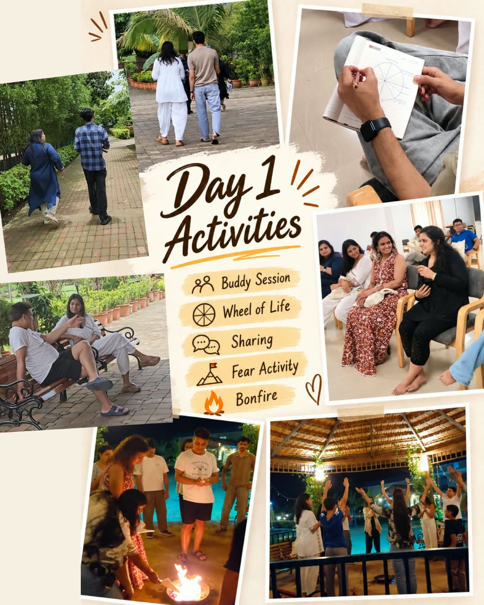
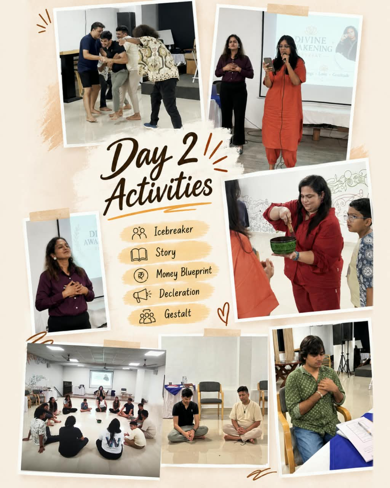
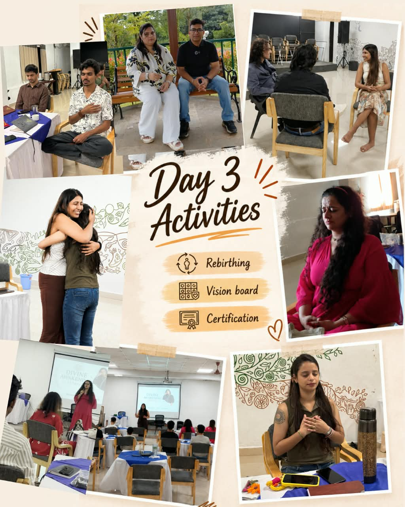
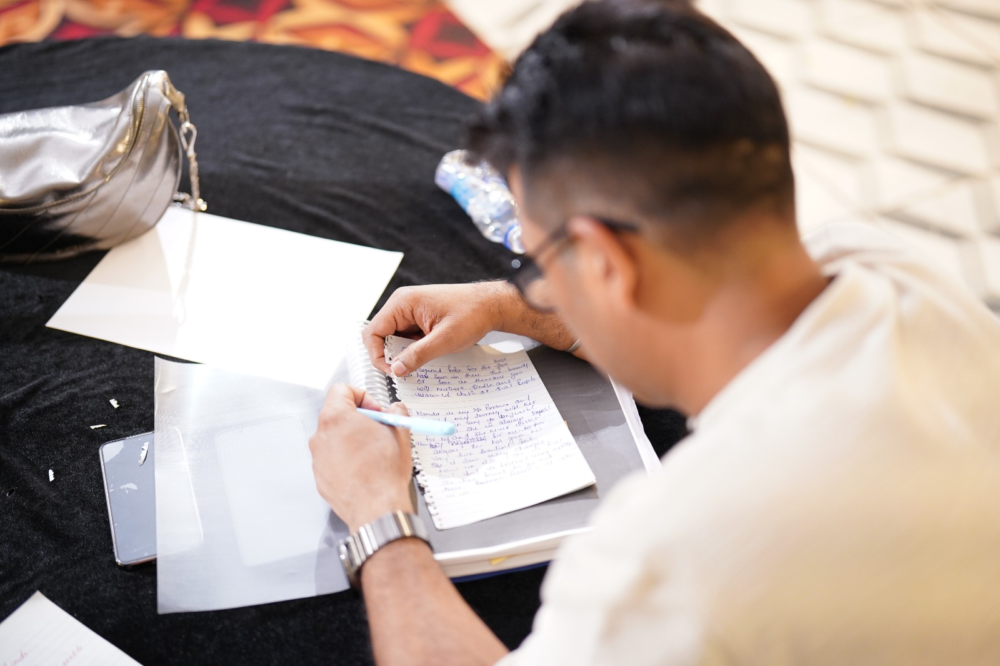
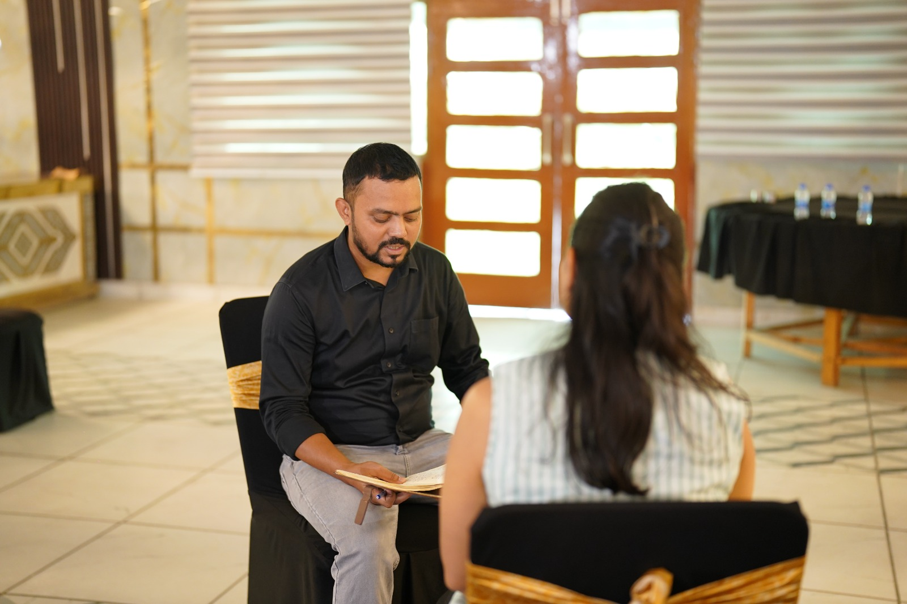
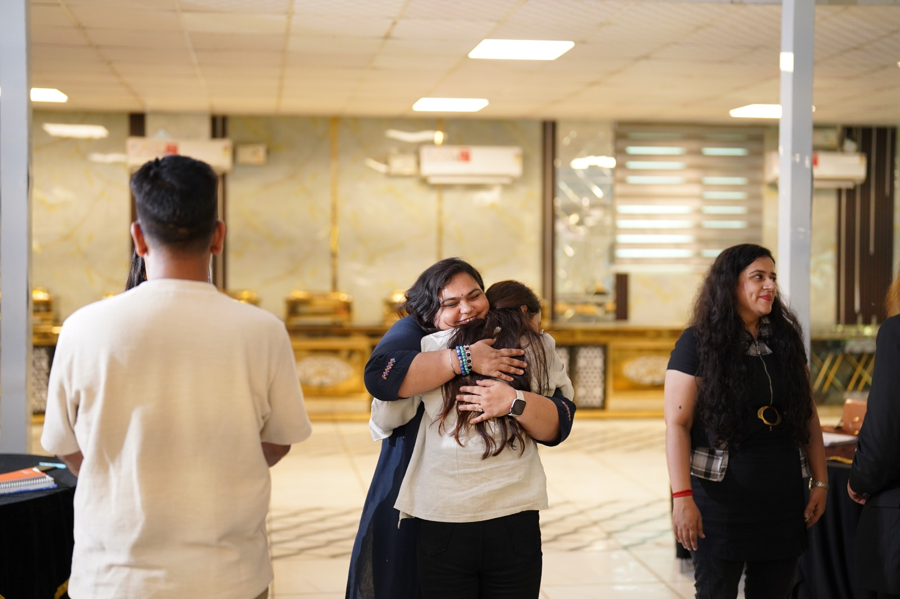
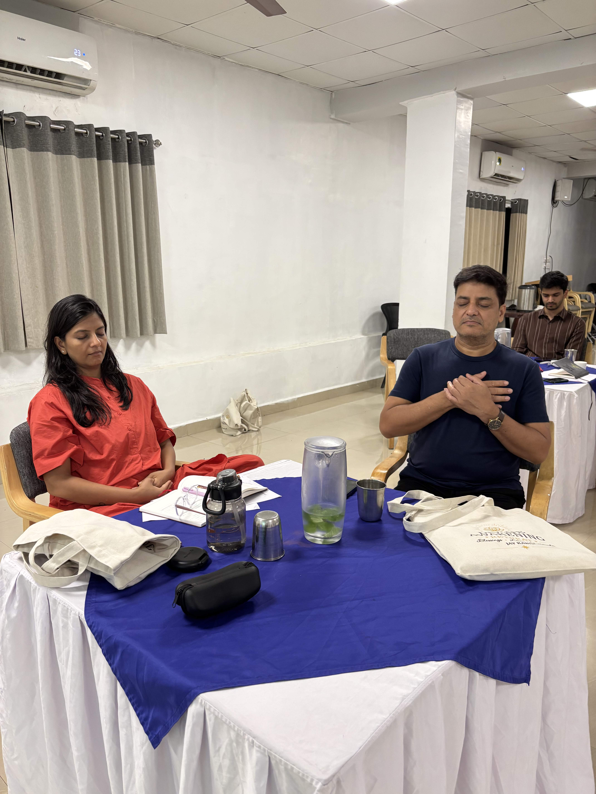
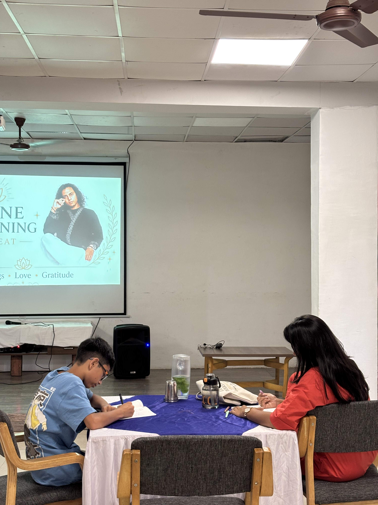
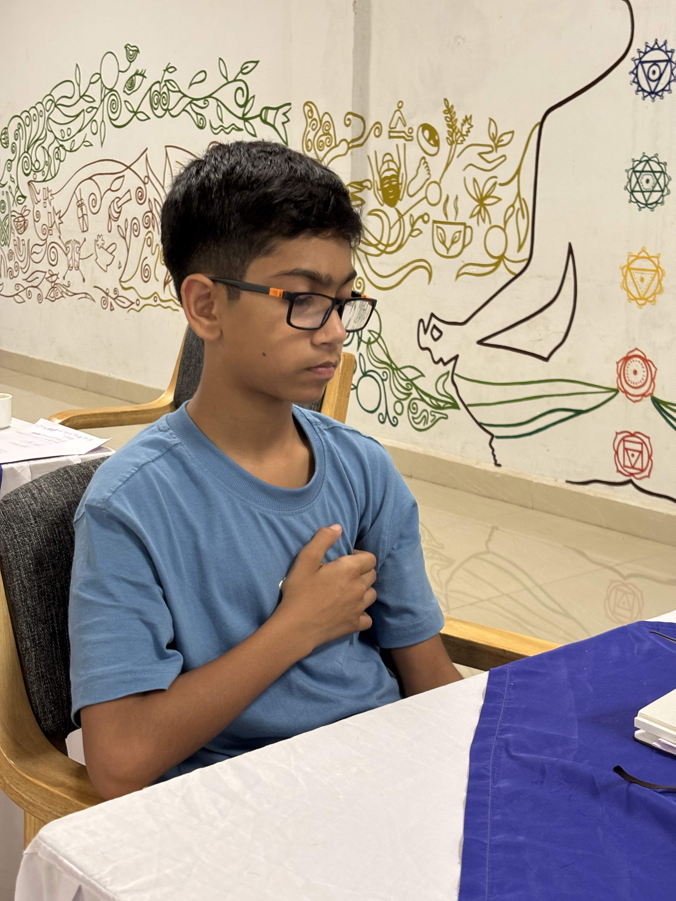
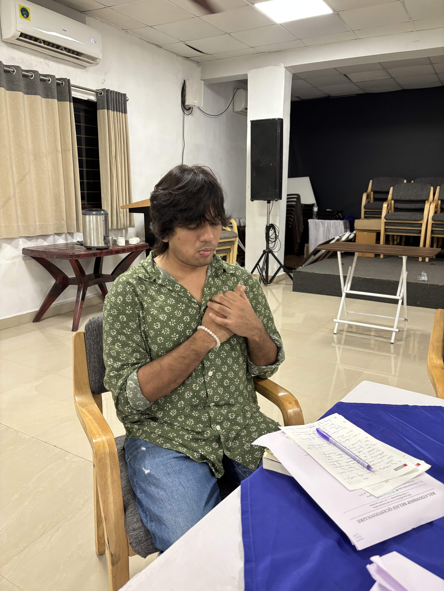
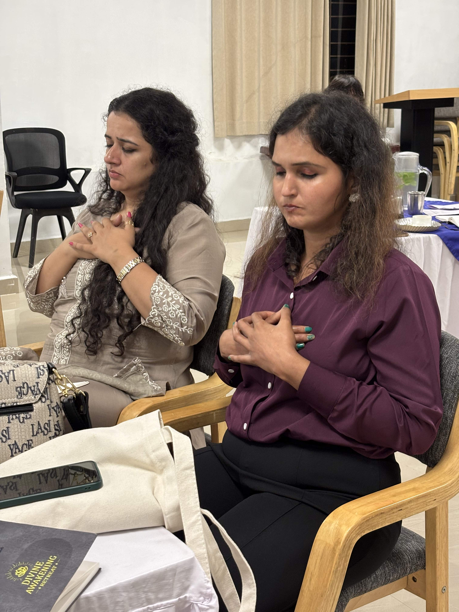
One-to-one coaching provides focused, private support. Programs and retreats add structure, shared practice and community. Rhea can help you decide which setting is most useful for what you want to explore.